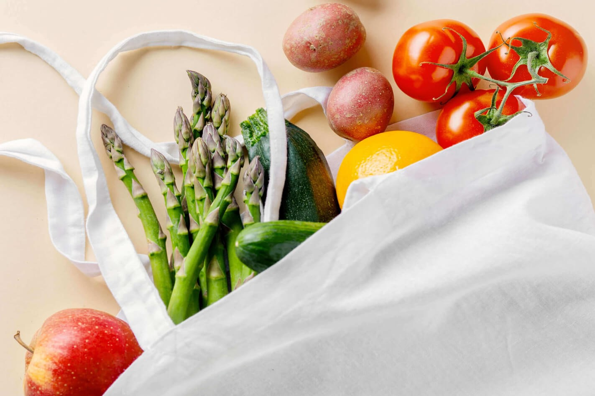
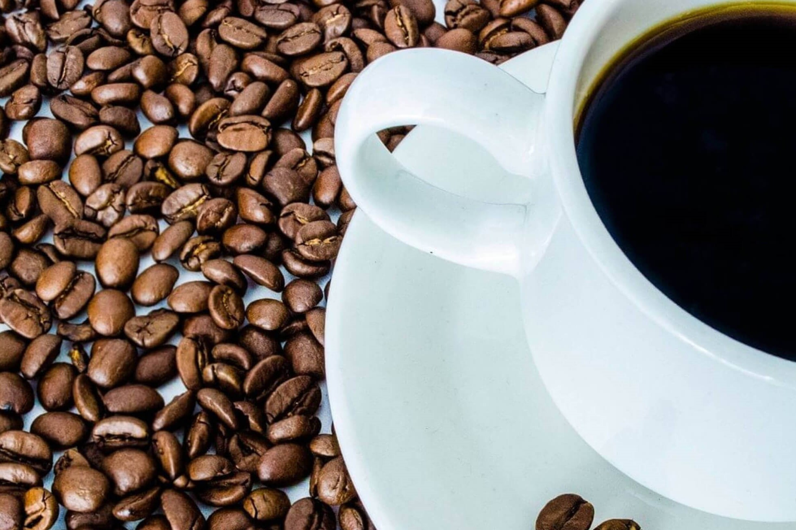

Clothes Made from Recycled Fabrics
The clothes made of natural materials are much safer to your skin and can be recycled. However, an even
better approach is to give your old jeans a new life. Amid a wave of second-hand stores gaining popularity,
a
series of garments are currently made from the clothes you bought last year. There are places to bring your
old clothes: Goodwill or Salvation Army or so. Moreover, various stores give discounts if you bring an old
textile. For example, bringing your old clothes to H&M, you get a 15% discount, while Levi’s provides a 20%
coupon for a single item. You can even donate non-clothing textiles like sheets and towels.
Reusable Grocery Bags

How many plastic bags are already stuck in one of the drawers in your kitchen? Now, guess how many of them
will remain on the planet long after your grand-grand children grow up. Eco bags are usually made of woven
cotton fibres. They are incredibly stress-resistant and durable, and since they are not transparent, no one
will find out you’ve bought one extra Nutella can. And even if the customers do grocery shopping online,
they
still may want to use a nice looking reusable grocery bag for carrying their regular stuff. Consider
informing
your customers that they get a discount if they use a reusable bag when picking up a purchased item.
Reusable Coffee Filters

There is no need to explain that coffee remains popular. What a hectic life would it be without this
cherished warm drink? In the eco-friendly stylish bamboo cup, of course. But whether you love it with almond
or soya milk, the coffee beans have to be brewed somehow. The costs and taste of the coffee depend on the
filter. Aside from common recyclable paper filters, the options include metal filters, nylon and even golden
ones. A sustainable organic cotton filter seems to balance both. This one absorbs a bit of oil but lets the
acid flow, and will serve you for years saving you a lot of money. Eco options can be used for machines as
well. Reusable filters fit almost any coffeemaker and are definitely
worth buying since a single filter can give much more than a one-off plastic. It is a bit more expensive but
can make a coffee for a small coffee shop. And being easier in use you will be enjoying your morning coffee
quicker than ever before.